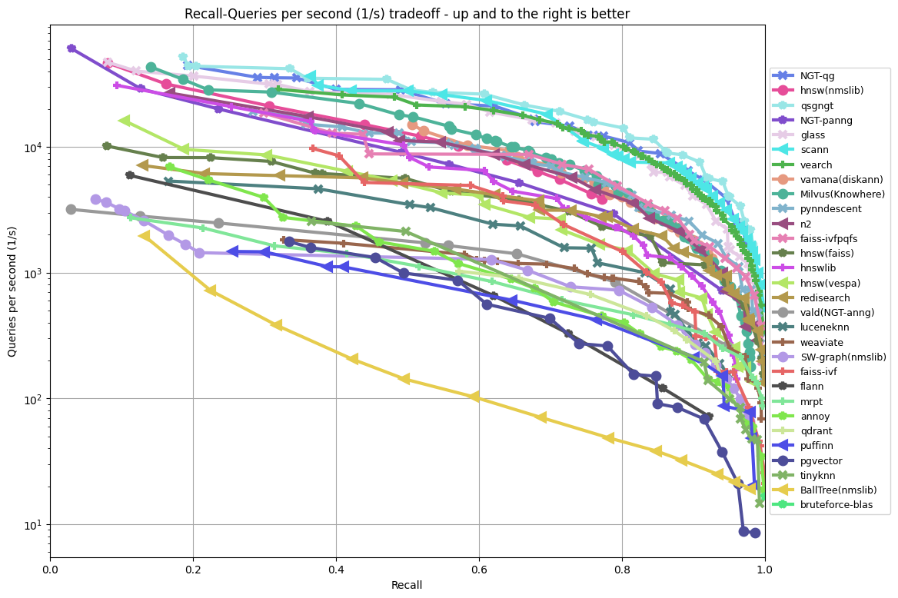

HNSW vs IVF
Vector Search Algorithms for High-Dimensional Data
Technical Deep Dive for RAG Systems & Beyond
by Dmytro Dragan
Technical Deep Dive for RAG Systems & Beyond
by Dmytro Dragan
Data Lead Engineer
Retrieval-Augmented Generation (RAG) is one of the main applications driving vector search algorithm development.
Vector search algorithms power the retrieval component, enabling efficient similarity matching between queries and document embeddings.
Why Vector Search Matters: RAG systems require fast, accurate retrieval from millions of documents, making efficient vector search algorithms essential for real-world applications.
Word embeddings transform words into high-dimensional vectors where semantically similar words are geometrically close.
The geometric proximity of vectors directly reflects semantic relationships between words.
Key Principle: Semantic similarity = Geometric proximity in vector space. This fundamental relationship enables vector search algorithms to find relevant content efficiently.
Voronoi Diagrams
Geometric partitioning
RNG
Graph-based approaches
LSH & Trees
Random projections
IVF-PQ
Clustering + compression
HNSW
Multi-layer navigation
Key Insight: Modern algorithms combine graph navigation with hierarchical structures and quantization techniques
Points: {1, 3, 5, 7, 10, 13, 15, 18} | Distance: |a-b| | Max neighbors: M=2 per layer
Level Assignment (Randomized)
Build HNSW Connections
Query = 11, k = 2
3. Result
High-accuracy requirements, sufficient RAM, real-time applications, dynamic datasets, when query latency is critical
Points: {1, 3, 5, 7, 10, 13, 15, 18} | Distance: |a-b| | k=3 clusters | Goal: top-2 neighbors
1) Train Coarse Quantizer (k-means)
2) Build Inverted Lists
Query A: q = 11
Query B: q = 14
Large-scale datasets, limited memory, batch processing, when accuracy trade-offs acceptable, distributed systems
IVF + Product Quantization
SSD-Resident Graph Index
Hybrid Approach
Sparse Partitioned ANN
Trend: Modern systems combine graph navigation with quantization and disk storage for optimal price/performance
| Metric | HNSW | IVF-Flat | IVF-PQ | DiskANN |
|---|---|---|---|---|
| Query Latency | 0.1-1ms ⭐⭐⭐ | 1-10ms ⭐⭐ | 0.5-5ms ⭐⭐⭐ | 2-20ms ⭐⭐ |
| Memory Usage | 4-8GB/1M vectors ⭐ | 4-8GB/1M vectors ⭐ | 0.1-0.5GB/1M vectors ⭐⭐⭐ | 0.5-2GB/1M vectors ⭐⭐⭐ |
| Recall@10 | 95-99% ⭐⭐⭐ | 85-95% ⭐⭐ | 80-90% ⭐⭐ | 90-95% ⭐⭐⭐ |
| Build Time | Hours ⭐⭐ | Minutes ⭐⭐⭐ | Minutes ⭐⭐⭐ | Hours ⭐⭐ |
| Max Scale | 100M vectors ⭐⭐ | 1B+ vectors ⭐⭐⭐ | 10B+ vectors ⭐⭐⭐ | 1B+ vectors ⭐⭐⭐ |
* Benchmarks on SIFT-1M dataset, actual performance varies by use case
HNSW, NSG, Vamana
FAISS-IVF, ScaNN, DiskANN
Annoy, KD-tree variants
Qdrant, Milvus, PyNNDescent
For detailed performance comparisons, visit ann-benchmarks.com
For learning and examples
For presentation draft
For the main implementation

For generated images
If you laughed once today, my job here is done